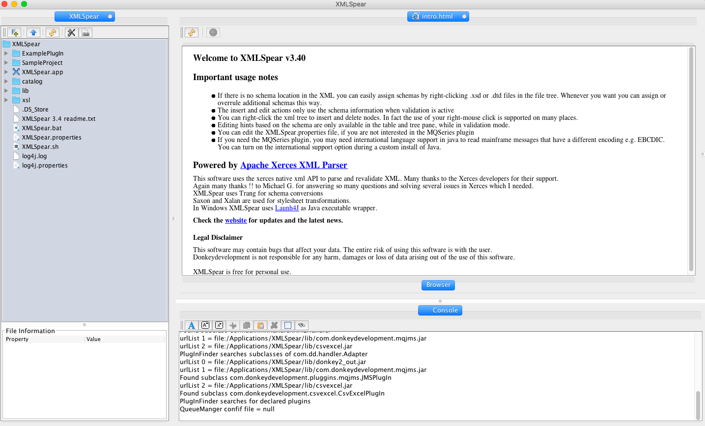
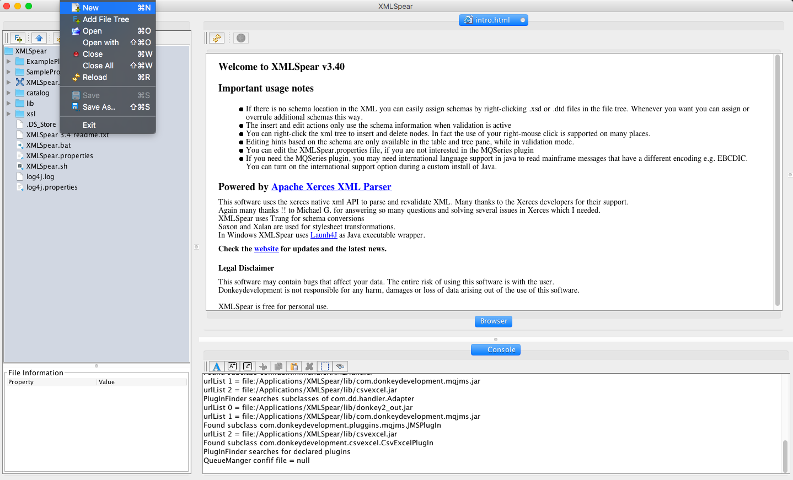
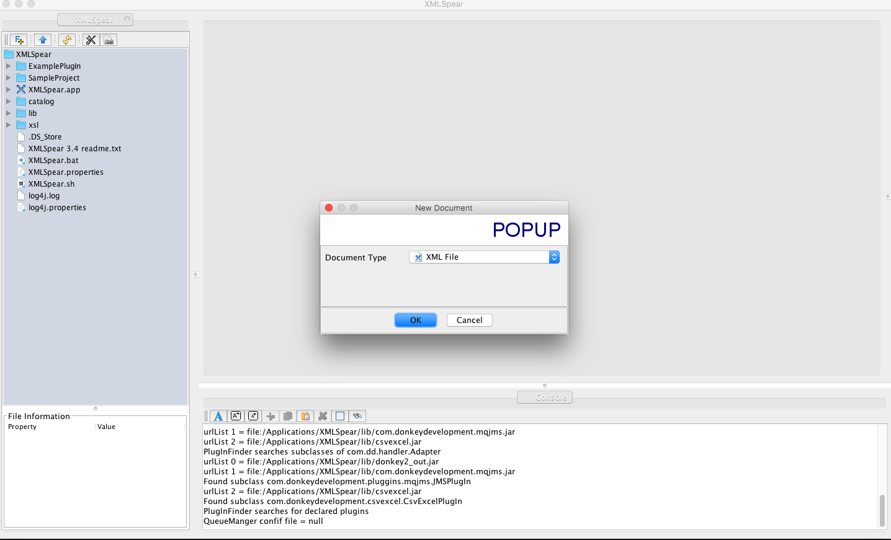
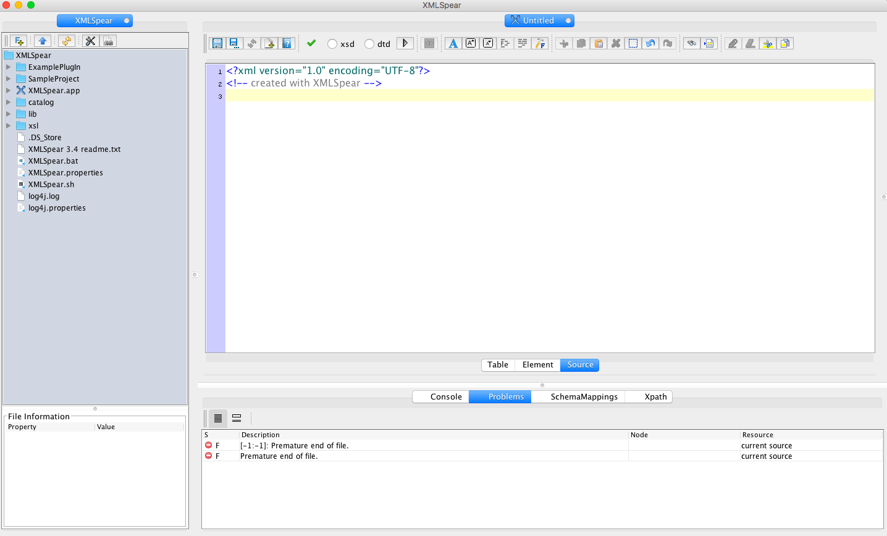
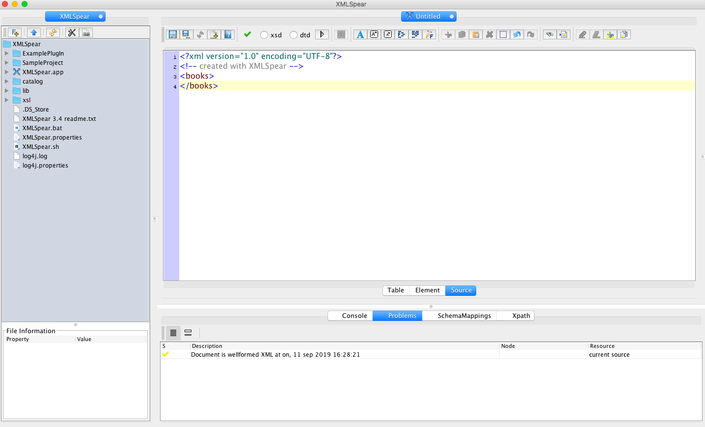
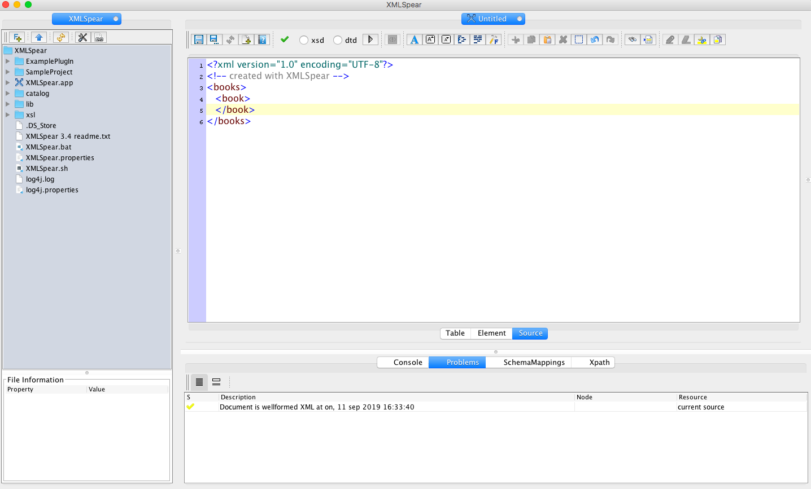
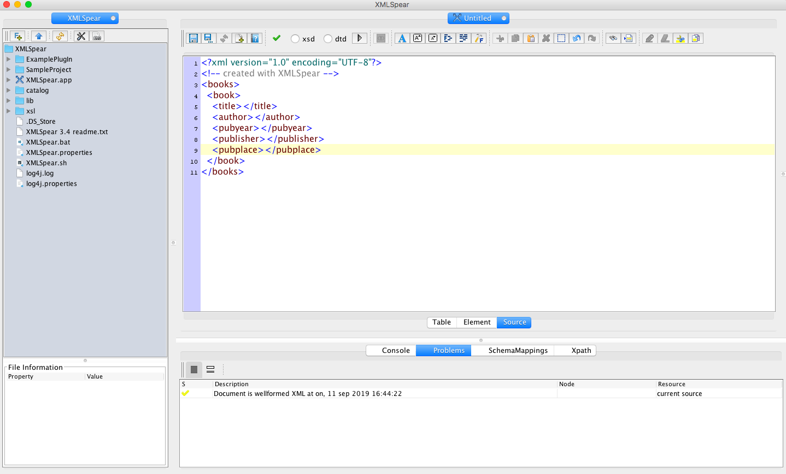
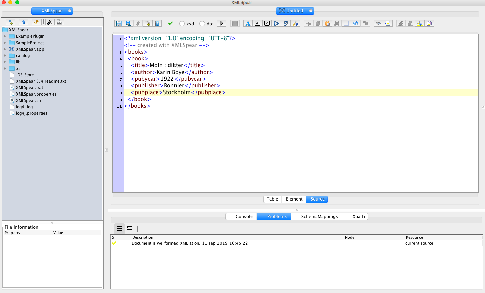
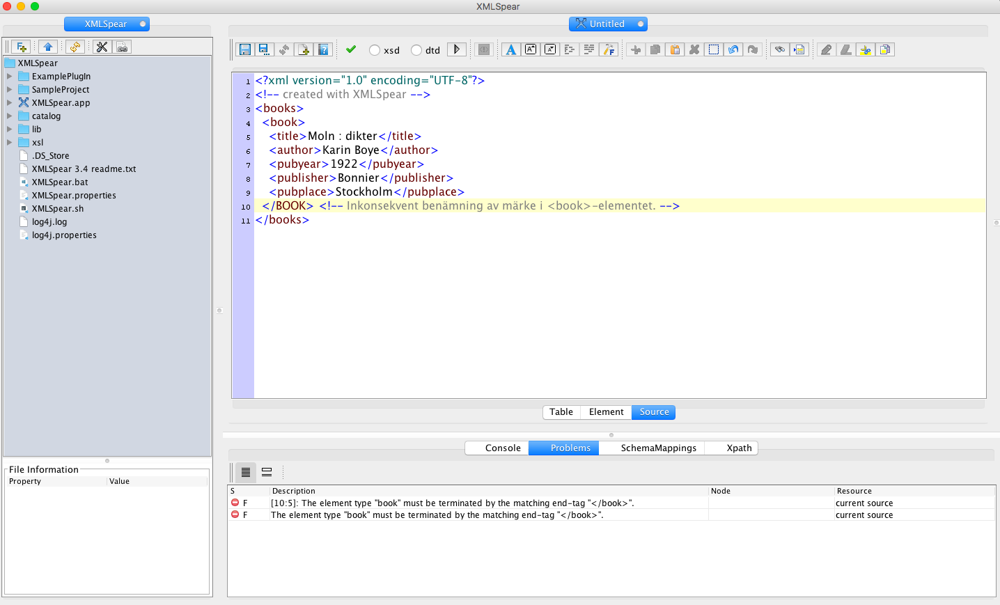

5 Skapa en XML-fil
Tanken med denna del av XML-introduktionen är att visa hur det går att skapa en egen XML-fil.
Inledningsvis är det viktigt att poängtera att specialtecken så som å, ä och ö inte bör finnas med i XML-filers namn. Mellanslag bör också undvikas. Filändelsen ska vara .xml. Detta för att XML-redigeringsprogram lätt ska kunna hitta sökvägen till XML-filen.
Följande anvisningar görs i XML-redigeringsprogrammet XMLSpear. Liknande principer gäller för programmen Oxygen och EdiTiX.
Om du har en Chromebook så kan du skriva din XML-kod i ett textredigeringsprogram, t ex Text. Programmet går att hämta på följande länk: https://chrome.google.com/webstore/detail/text/mmfbcljfglbokpmkimbfghdkjmjhdgbg. Använd en webbtjänst för att validera välformigheten i koden, t ex http://xmlvalidator.new-studio.org/.
5.1 Öppna XMLSpear
Bilden nedan visar hur det ser ut när XMLSpear öppnas. I spalten till vänster syns ett dokumentträd. Under det finns en ruta med filinformation. Huvudvyn är den stora rutan till höger. Under den finns en konsol där meddelanden om filen skrivs ut.

5.2 Öppna en ny fil
Öppna en ny fil genom att klicka på Arkiv/File och välj New.

Välj sedan XML file i listan över dokumenttyper.

XMLSpear skapar då en ny XML-fil.

5.3 Bestäm märken och element
Överst finns prologen med en XML-deklaration. Under den finns en kommentar i form av <!-- created with XMLSpear -->. Kommentarer visas inte när XML-filen renderas i en webbläsare. Kommentarer är bra för att märka upp delar av koden, för en själv eller för andra.
Detta exempel syftar till att skapa en förteckning över bibliografisk poster av böcker. Posten ska avse information rörande titel, författare, utgivningsår, förlag och förlagsort.
Inledningsvis bestäms märken som motsvarar denna information. Inom dessa märken skrivs sedan strängar med text där subjekten, det vill säga de böcker som avses beskrivas i varje post, kommer inrymmas. Lämpliga märken för varje beskrivning kan till exempel utgöra:
| Information | Märke |
|---|---|
| Bok | <book> |
| Titel | <title> |
| Författare | <author> |
| Utgivningsår | <pubyear> |
| Förlag | <publisher> |
| Förlagsort | <pubplace> |
Ett rotelement behövs också som inramar de böcker som ska förtecknas. För enkelhets skull kallas rotelementet för <books>. Detta skrivs som bekant som första element.
5.4 Skapa ett rotelement
Rotelementet vi ska använda heter alltså <books> och skrivs med inledande och avslutande märke:

5.5 Lägg till ytterligare element
Fyll sedan rotelementet med ytterligare ett element som avser en bok. Enligt tabellen ovan heter detta element <book>.

Inom <book> ska sedan information om titel, författare, utgivningsår, förlag och förlagsort beskrivas. För enkelhets skulle skriver vi sedan ut varje respektive element inom <book>.
<books>
<book>
<title></title>
<author></author>
<pubyear></pubyear>
<publisher></publisher>
<pubplace></pubplace>
</book>
</books>
5.6 Lägg till bibliografisk information
Härnäst går det att fylla elementen med information om en specifik bok. Som exempel används här Libris-posten för http://libris.kb.se/bib/29291.
<books>
<book>
<title>Moln : dikter</title>
<author>Karin Boye</author>
<pubyear>1922</pubyear>
<publisher>Bonnier</publisher>
<pubplace>Stockholm</pubplace>
</book>
</books>
Detta utgör en enkel bibliografisk post. Filen är dessutom välformad, vilket syns i konsolen.
5.7 Icke välformad XML
Som tidigare nämnt reagerar XML-redigeraren på inkonsekvent användande av märken. Om ett av märkena i ett element skrivs med versaler så genereras ett felmeddelande i konsolen.
<books>
<book>
<title>Moln : dikter</title>
<author>Karin Boye</author>
<pubyear>1922</pubyear>
<publisher>Bonnier</publisher>
<pubplace>Stockholm</pubplace>
</BOOK> <!-- Inkonsekvent benämning av märke i <book>-elementet. -->
</books>
[10:5]: The element type "book" must be terminated by the matching end-tag "</book>".
5.8 Lägg till ytterligare en bok
För att lägga till ytterligare en bok i vår förteckning över bibliografiska poster så används samma element för uppmärkning men med annat innehåll. Detta exemplifieras här med Libris-posten för Bret Easton Ellis Lunar Park, utgiven 2005, som läggs i ett separat <book>-element under Boyes bok.
<books>
<book>
<title>Moln : dikter</title>
<author>Karin Boye</author>
<pubyear>1922</pubyear>
<publisher>Bonnier</publisher>
<pubplace>Stockholm</pubplace>
</book>
<book>
<title>Lunar Park</title>
<author>Bret Easton Ellis</author>
<pubyear>2005</pubyear>
<publisher>Knopf</publisher>
<pubplace>New York</pubplace>
</book>
</books>
5.9 Avslutningsvis
Detta är de grundläggande principerna för att skriva XML, vilka är fördelaktiga att ha med sig till föreläsningen om tesauruskonstruktion med SKOS. Ställ gärna frågor i diskussionsforumet i Pingpong om något är oklart.
I allmänhet gäller det att inte vara rädd att göra fel vid kodning. Försök att identifiera eventuella felmeddelanden och korrigera dessa. Det kan också vara behjälpligt att kopiera felmeddelandena och söka efter dem på webben. Chansen är stor att någon annan har stött på samma problem tidigare, ställt en fråga i ett diskussionsforum och fått hjälp med sitt problem.
Lycka till!